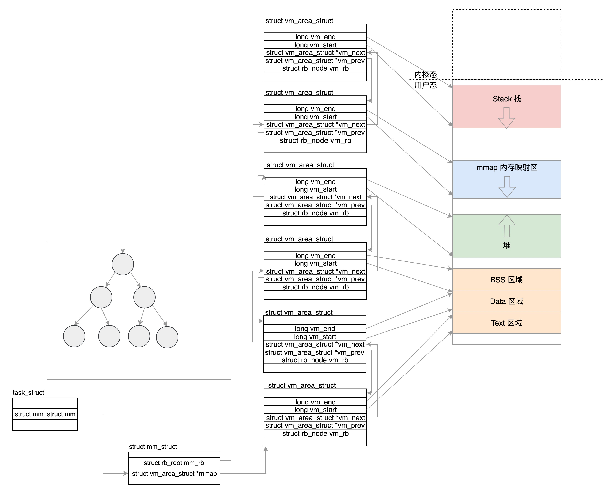

用户态和内核态
进程空间部署
各区域的位置信息
- total_vm 是总共映射的页的数目。
- locked_vm 就是被锁定不能换出，pinned_vm 是不能换出，也不能移动。
- data_vm 是存放数据的页的数目，exec_vm 是存放可执行文件的页的数目，stack_vm 是栈所占的页的数目。
- start_code 和 end_code 表示可执行代码的开始和结束位置，start_data 和 end_data 表示已初始化数据的开始位置和结束位置。
- start_brk 是堆的起始位置，brk 是堆当前的结束位置。前面咱们讲过 malloc 申请一小块内存的话，就是通过改变 brk 位置实现的。
- start_stack 是栈的起始位置，栈的结束位置在寄存器的栈顶指针中。
- arg_start 和 arg_end 是参数列表的位置， env_start 和 env_end 是环境变量的位置。它们都位于栈中最高地址的地方。
unsigned long mmap_base; /* base of mmap area */
unsigned long total_vm; /* Total pages mapped */
unsigned long locked_vm; /* Pages that have PG_mlocked set */
unsigned long pinned_vm; /* Refcount permanently increased */
unsigned long data_vm; /* VM_WRITE & ~VM_SHARED & ~VM_STACK */
unsigned long exec_vm; /* VM_EXEC & ~VM_WRITE & ~VM_STACK */
unsigned long stack_vm; /* VM_STACK */
unsigned long start_code, end_code, start_data, end_data;
unsigned long start_brk, brk, start_stack;
unsigned long arg_start, arg_end, env_start, env_end;
各区域的属性信息
- 每一块区域使用vm_area_struct来描述信息
- vm_area_struct来描述位置信息
- 解析ELF
- 建立内存映射
load_elf_binary
- 调用 setup_new_exec，设置内存映射区 mmap_base；
- 调用 setup_arg_pages，设置栈的 vm_area_struct，这里面设置了 mm->arg_start 是指向栈底的，current->mm->start_stack 就是栈底；
- elf_map 会将 ELF 文件中的代码部分映射到内存中来；
- set_brk 设置了堆的 vm_area_struct，这里面设置了 current->mm->start_brk = current->mm->brk，也即堆里面还是空的；
- load_elf_interp 将依赖的 so 映射到内存中的内存映射区域。
- 内存映射图

修改映射
- 函数的调用
- malloc申请堆内的空间 brk 或者 mmap
堆内存分配
- sys_brk的新堆顶地址和旧的堆顶地址进行合并
- 考虑需要不需要分配页的问题
- 如果是释放，直接释放
- 如果是分配堆内存 当前的堆顶和下一个 vm_area_struct 之间还能不能分配一个完整的页
- do_brk 进一步分配堆空间，从旧堆顶开始，分配计算出的新旧堆顶之间的页数。
伙伴系统页的分配
- 把所有的空闲页分组为 11 个页块链表，每个块链表分别包含很多个大小的页块，有 1、2、4、8、16、32、64、128、256、512 和 1024 个连续页的页块
- 在一个循环中先看当前节点的 zone。如果找不到空闲页，则再看备用节点的 zone
- 先去free_area找与当前2^order匹配的队列
- 找不到去更大的2^order队列中找，然后把多余的页面放入其他页面链表
物理内存的总结